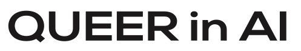
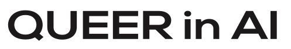

Queer in AI is hosting a social and satellite workshop at NeurIPS, featuring
several speakers, a panel on ethics, AI/ML, and queer issues, and a
poster session highlighting the research contributions of queer
scientists.
Please sign up for our anonymous
mailing
list for updates and to help us better gauge
attendance.
The Queer in AI @ NeurIPS 2018 professional mixer will be Thursday December 6 from 7-10pm at Somwhr, two blocks from the Palais des Congrès. Drinks and light refreshments will be served.
The workshop will be hosted on Saturday morning, December 8th at the InterContinental Montreal (accross the street from Palais des Congrès), in the S. Bernhardt room and the poster session will be hosted in the adjacent C. Sherwood S./C.S. Stratton room.
| 8:00 - 8:30 | Breakfast |
| 8:30 - 8:50 | Introduction by William Agnew |
| 8:50 - 9:05 | Samy Bengio |
| 9:05 - 9:22 | Rapha |
| 9:22 - 9:40 | David Vázquez |
| 9:40 - 9:50 | Coffee Break presented by Google |
| 9:50 - 11:00 | Panel Discussion led by Margaret Mitchell |
| 11:00 - 11:50 | Poster Session, Coffee Break, and Career Advice Session |
No advance submission is necessary for the poster session.
However, please sign up for our anonymous
mailing list
so we can gauge the expected number of posters.
Please bring your poster to the C. Sherwood S./C.S. Stratton room in the
Intercontinental Montreal between 8 and 8:30am Saturday morning to set up.
Machine learning is widely used to categorize people and has rapidly increasing influence over the world. Queer people do not fit into traditional categories. This raises several issues about how machine learning interacts with queer people. Machine learning algorithms trained on data that is not inclusive of queer people may misclassify them. In addition, unwanted or accidental inference/disclosure of a queer person’s identity can be devastating to their well-being, physical, legal, social, or otherwise. We propose a panel to raise awareness of these issues and increase the visibility of queer people in the NeurIPS community. Specifically, we will host relevant experts and decision-makers from industry and academia to discuss how ML algorithms and datasets may be made more inclusive of queer people, how to protect data which may be used to identify queer people, and other challenges and potential benefits of ML/AI for queer people.


 
